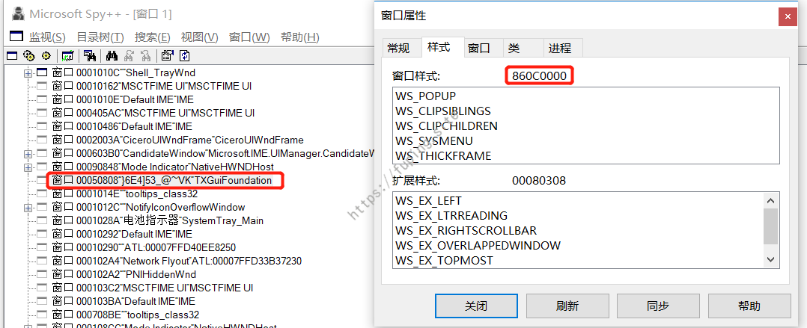
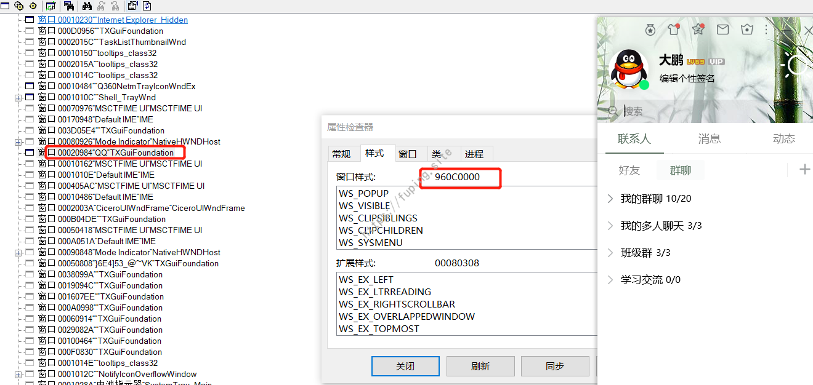

Windows版本QQ锁定可被绕过
在使用某抢票软件的时候，由于要设置抢票成功后的通知，就用了QQ通知。结果发现当QQ在锁定时，也可以获取到QQ的控制面板进行操作，竟然绕过了QQ的锁定，于是就去尝试如何实现QQ锁定的绕过。

情景还原
首先演示一下如何使用抢票软件进行QQ锁定的绕过。这里以最新版本9.0.7（24121）为例。下载后正常安装。
安装后查看版本。
将QQ锁定，然后打开软件，选择QQ通知，点击“获取聊天窗口”，此时会进行QQ窗体的加载，然后在“要发送的窗口”下拉框会显示一个随机字符串，点击“测试发送”按钮，会发现QQ控制面板弹出。
而且是可以进行未锁定前的所有功能。如发送和接收消息，如图所示。
实现过程
刚开始的想法是首先获取QQ窗口的句柄，然后再利用句柄进行显示与隐藏。
尝试一
这里采用的是精易编程助手来获取句柄，当qq处于非锁定状态，获取QQ窗体句柄后，可以利用句柄对QQ进行隐藏或显示，即使把QQ锁定，也可以进行隐藏或者显示。
但是当QQ隐藏后，此时再获取句柄后，无法绕过QQ的锁定。这时候获取的句柄为QQ锁定状态的句柄。
该方法只能对未锁定的QQ进行操作，锁定后就无法获取控制面板句柄了，因此该方法行不通。
尝试二
放弃了精易编程助手，采用更专业的工具spy++。找到句柄后发现标题为一串随机的字符串，与抢票工具获取聊天窗口中标题一样。
猜测需要最终需要获取的句柄就是这个，句柄对应的十六进制为504BE，然后调用windows api进行窗口的显示和隐藏。
显示窗口ShowWindow (句柄, 1)，隐藏窗口ShowWindow (句柄, 0)。
效果如图所示。
这样虽然能够满足，但是却不够智能，无法自动获取句柄，需要借助其他工具去寻找句柄，因此放弃。
尝试三
本次测试中走了两条“弯路”，在这里简要说明一下，就不再附详细的过程了。某次发现使用
1 | 临时_句柄=FindWindowA (“TXGuiFoundation”, “TXMenuWindow”) |
或者
1 | 临时_句柄=FindWindowA (“TXGuiFoundation”, “”) |
可以获取到QQ锁定时控制面板的句柄。如图所示
但这些只是概率事件，多数情况下还是不行的。即使可以使用这两种方法，但是这两种方法获取的都是一个句柄，当有两个QQ时，就无法同时获取两个句柄了，所以该方法不可取。
由于QQ处于锁定时，窗口标题为随机的字符串，所以无法使用FindWindowA这种方法了。
尝试四之最终实现
此时想到另外一个思路，遍历屏幕上所有的顶层窗口，然后根据条件进行筛选。
这里用的Java来实现，操作Windows API采用了JNA。
JNA的全称是Java Native Access，你只要在一个java接口中描述本地库中的函数与结构， JNA将在运行期动态访问本地库，自动实现Java接口到本地库函数的映射。
使用maven加入所需的依赖。
1 | <dependency> |
枚举屏幕上所有的顶层窗口采用的是EnumWindows。
1 | boolean EnumWindows(WinUser.WNDENUMPROC lpEnumFunc, |
该函数枚举屏幕上所有的顶层窗口，并将窗口句柄传送给应用程序定义的回调函数。回调函数返回FALSE将停止枚举，否则EnumWindows函数继续到所有顶层窗口枚举完为止。
参数：lpEnumFunc - 指向应用程序定义的回调函数的长指针。
参数：data - 指定要传递给回调函数的应用程序定义的值。
代码实现如下：
1 | User32.INSTANCE.EnumWindows(new WinUser.WNDENUMPROC() { |
此时获取的时所有顶层窗口的句柄，剩下的就是去如何进行过滤，留下所需的句柄。
通过对比发现，可以用窗口样式进行区分。当QQ锁定时（或QQ未锁定且最小化时），对应的窗口样式为860C0000（十进制为2248933376）。
下面为QQ锁定时的样式。

通过查询API，可以用User32.INSTANCE.GetWindowLongPtr(hwnd,User32.GWL_STYLE)来获取窗口样式。然后通过这种方法进行过滤，当该值为2248933376，则认为对应的hwnd为QQ控制面板的句柄。
主要代码如下：
1 | User32.INSTANCE.EnumWindows(new WinUser.WNDENUMPROC() { |
可以看到成功获取了QQ锁定时控制面板的句柄。有了句柄，就可以进行之前的操作了，如显示与隐藏。
当QQ未锁定时，QQ弹出时对应的窗口样式为960c0000（十进制为2517368832）。

此时就可以先通过EnumWindows枚举所有的窗口，然后再使用GetWindowLongPtr(hwnd,User32.GWL_STYLE)获取窗口样式进行匹配，匹配到所需的窗口。
这里将QQ锁定和未锁定的情况都考虑进去，然后获取QQ控制面板的句柄。之后通过GetWindowText获取窗口的标题，再使用ShowWindow进行隐藏与显示操作。主要代码如下：
1 | public static void main(String[] args) throws Exception{ |
首先获取到QQ控制面板的句柄，然后依次获取其标题，并进行显示-隐藏-显示等过程。效果如图所示。
这种成功实现了QQ锁定时自动获取控制面板句柄，实现了QQ锁定的绕过。而且有多个QQ时，都可以获取其句柄。
总结
在一次偶然的情况下可以绕过QQ锁定，于是就进行了尝试，走了一些弯路，最终实现了这种效果。主要过程就是获取所有顶层窗口句柄-根据窗口样式匹配到QQ控制面板的句柄-使用ShowWindow进行显示。也许这不是最佳的解决方法。如果大家有更好的方法或者建议，欢迎分享。
参考资料
[1]https://docs.microsoft.com/en-us/windows/desktop/api/winuser/nf-winuser-getwindowlonga